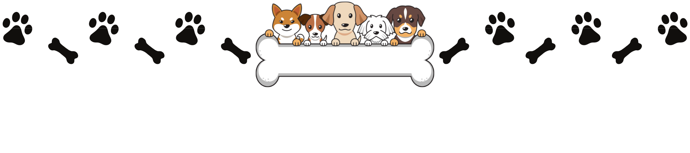

Dog Breeds
When selecting a dog to adopt, it's important to consider the different breeds and their characteristics to find the best fit for your lifestyle. For example, if you have a small living space and limited time for exercise, a small dog breed like a Chihuahua or Pomeranian may be a good fit. On the other hand, if you have a large yard and enjoy long walks, a large breed like a Labrador Retriever or German Shepherd may be a better choice.
Size isn't the only factor to consider when selecting a dog breed. It's also important to research their specific personality traits, grooming needs, and potential health issues to ensure that you're choosing a breed that will be a good match for your lifestyle and family.
Small Breeds
Dachshund
Pug
Jack Russell Terrier
Pomeranian
Beagle
Maltese
Yorkshire Terrier
Corgi
French Bulldog
Shih Tzu
Miniature pincher
Chihuaha
Medium Breeds
Border Collie
Boxer
Boston Terrier
Bulldog
Cocker Spaniel
Siberian Husky
Large Breeds
Golden Retriever
Great Dane
German Shepherd
Rottweiler